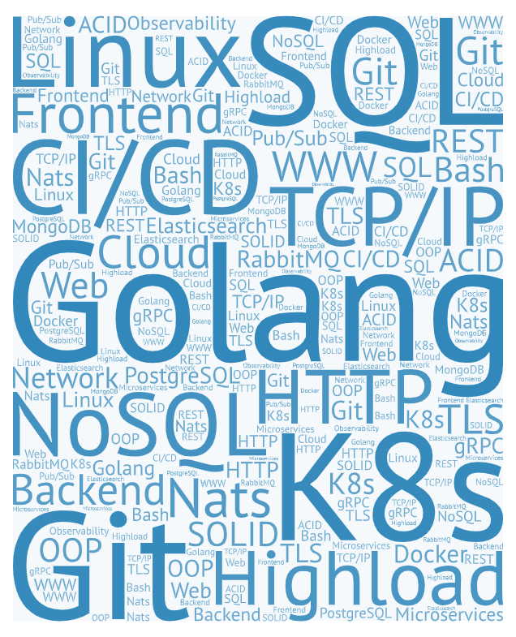

{{ define "IndexAbout" }}

<!-- ======= About Section ======= -->
<section id="about" class="about">
    <div class="container" data-aos="fade-up">

        <div class="section-header">
            <h2>О сайте</h2>
            <p>"Награды и штрафы - самая низкая форма обучения." – Чжуан-цзы</p>
        </div>

        <div class="row g-4 g-lg-5" data-aos="fade-up" data-aos-delay="200">

            <div class="col-lg-5">
                <div class="about-img">
                    
                </div>
            </div>

            <div class="col-lg-7">
                <h5 class="pt-0 pt-lg-5">Сервис предлагает структурированный набор различных источников, которые помогут вам пройти весьма непростой путь до позиции junior-разработчика</h5>
                <p>Здесь вы НЕ найдете уникальных материалов, авторских методик и гарантий, ровно как и ограничений, штрафов и какой-либо коммерции</p>

                <!-- Tabs -->
                <ul class="nav nav-pills mb-3">
                    <li><a class="nav-link active" data-bs-toggle="pill" href="#tab1">Основное</a></li>
                    <li><a class="nav-link" data-bs-toggle="pill" href="#tab2">Прогресс</a></li>
                    <li><a class="nav-link" data-bs-toggle="pill" href="#tab3">Тесты</a></li>
                </ul>
                <!-- End Tabs -->

                <!-- Tab Content -->
                <div class="tab-content">

                    <div class="tab-pane fade show active" id="tab1">

                        <p class="fst-italic">Основные возможности</p>

                        <div class="d-flex align-items-center mt-4">
                            <i class="bi bi-check2"></i>
                            <h4>Свободные материалы</h4>
                        </div>
                        <p>Все материалы размещены в открытых источниках, не требующих регистрации.</p>

                        <div class="d-flex align-items-center mt-4">
                            <i class="bi bi-check2"></i>
                            <h4>Полный самоконтроль</h4>
                        </div>
                        <p>Вы сами решаете в каком объеме и как быстро проходить модули. Никаких ограничений по времени или числу попыток сдачи тестов.</p>

                        <div class="d-flex align-items-center mt-4">
                            <i class="bi bi-check2"></i>
                            <h4>Сообщество</h4>
                        </div>
                        <p>Discord - присоединяйтесь и общайтесь! Вероятно, сообщество единомышленников поможет вам куда более, чем весь функционал этого сервиса :)</p>

                    </div>
                    <!-- End Tab 1 Content -->

                    <div class="tab-pane fade show" id="tab2">

                        <p class="fst-italic">Что предлагает сервис:</p>

                        <div class="d-flex align-items-center mt-4">
                            <i class="bi bi-check2"></i>
                            <h4>Отслеживайте свой прогресс</h4>
                        </div>
                        <p>Простой и удобный интерфейс для прохождения с отслеживанием прогресса и возможностью регулярного повторения</p>

                        <div class="d-flex align-items-center mt-4">
                            <i class="bi bi-check2"></i>
                            <h4>Модули</h4>
                        </div>
                        <p>Весь путь разделен на модули. Увы, одно лишь знание языка программирования, не делает вас даже начинающим специалистом. Поэтому модулей будет много. Каждый содержит список материалов, возможные задания для тренировки и итоговый
                            тест. Прохождение теста означает завершение модуля. Последующие модули открываются по мере прохождения текущих.</p>

                    </div>
                    <!-- End Tab 2 Content -->

                    <div class="tab-pane fade show" id="tab3">

                        <p class="fst-italic">Основной интерактив - это тесты, которые помогут вам закрыть модули, а также вспомнить ранее пройденный материал</p>

                        <div class="d-flex align-items-center mt-4">
                            <i class="bi bi-check2"></i>
                            <h4>Тесты модулей</h4>
                        </div>
                        <p>Для закрытия модуля необходимо пройти тест, набрав минимум 85%. Чтобы открыть следующие модули необходимо пройти более половины открытых модулей</p>

                        <div class="d-flex align-items-center mt-4">
                            <i class="bi bi-check2"></i>
                            <h4>Свободные тесты</h4>
                        </div>
                        <p>Вы можете в любое время запустить тест, содержащий вопросы из всех пройденных ранее модулей. Их будет полезно проходить перед новым этапом для закрепления или после продолжительной паузы</p>

                        <div class="d-flex align-items-center mt-4">
                            <i class="bi bi-check2"></i>
                            <h4>Кроме тестов</h4>
                        </div>
                        <p>Каждый модуль содержит набор "домашних заданий" - практические задания, которые стоит выполнять для закрепления. Их проверка и отслеживание полностью на вашей совести :)</p>

                    </div>
                    <!-- End Tab 3 Content -->

                </div>

            </div>

        </div>

    </div>
</section>
<!-- End About Section -->

{{ end }}